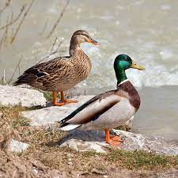
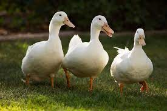
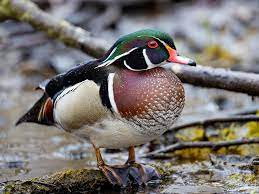
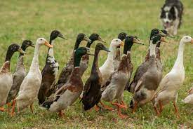

Facts About the Humble Duck:
| Fact | Description |
|---|---|
| Scientific Name | Anas |
| Family | Anatidae |
| Order | Anseriformes |
| Habitat | Ducks can be found in a variety of habitats, including lakes, rivers, marshes, and coastal waters. |
| Diet | Ducks are omnivores, feeding on a diet that includes aquatic plants, insects, small fish, and grains. |
| Reproduction | Most duck species build nests on the ground and lay a clutch of eggs. The incubation period varies among species. |
| Flight | Ducks are strong fliers, and migration is a common behavior for many species, especially in response to seasonal changes. |
Mallard Duck
The Mallard is one of the most common and recognizable ducks. It has a distinctive glossy green head and white neck ring. Male Mallards are known for their vibrant colors, while females have mottled brown plumage.
Pekin Duck
Pekin ducks are domesticated white ducks with orange bills and legs. They are known for their friendly nature and are popular for their meat production. Pekin ducks are often kept as backyard pets due to their calm temperament.
Wood Duck
The Wood Duck is known for its striking and vibrant plumage. Males have iridescent green and purple heads, while females have more subdued colors. Wood Ducks are cavity nesters and are commonly found in wooded wetlands.
Indian Runner Duck
Indian Runner Ducks are known for their upright posture. They have a slim build and come in various colors. These ducks are excellent egg layers and are often kept for pest control in gardens due to their foraging habits.